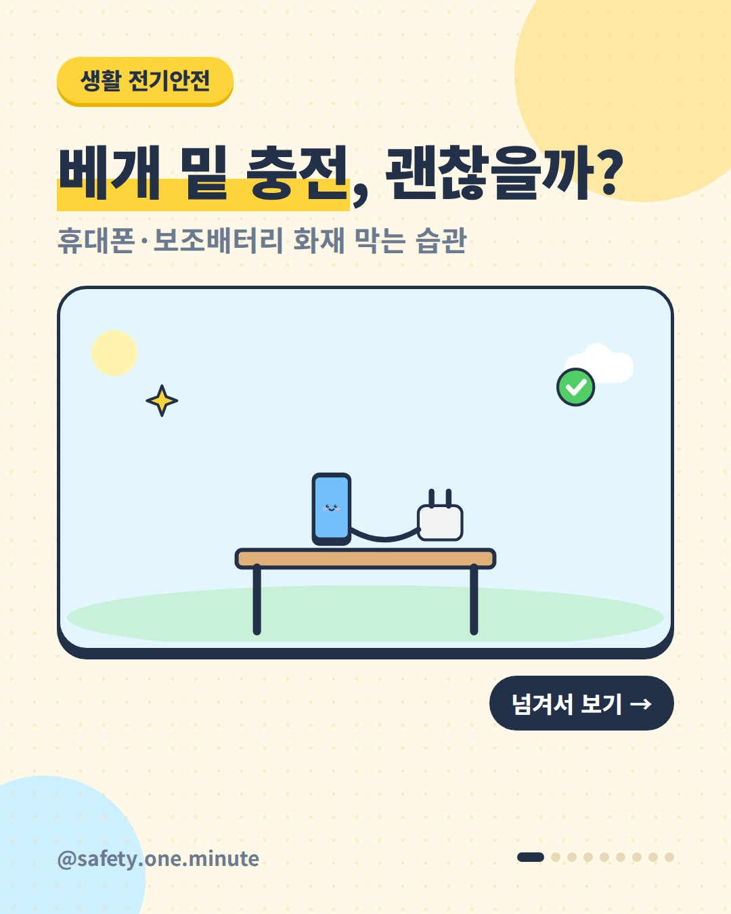
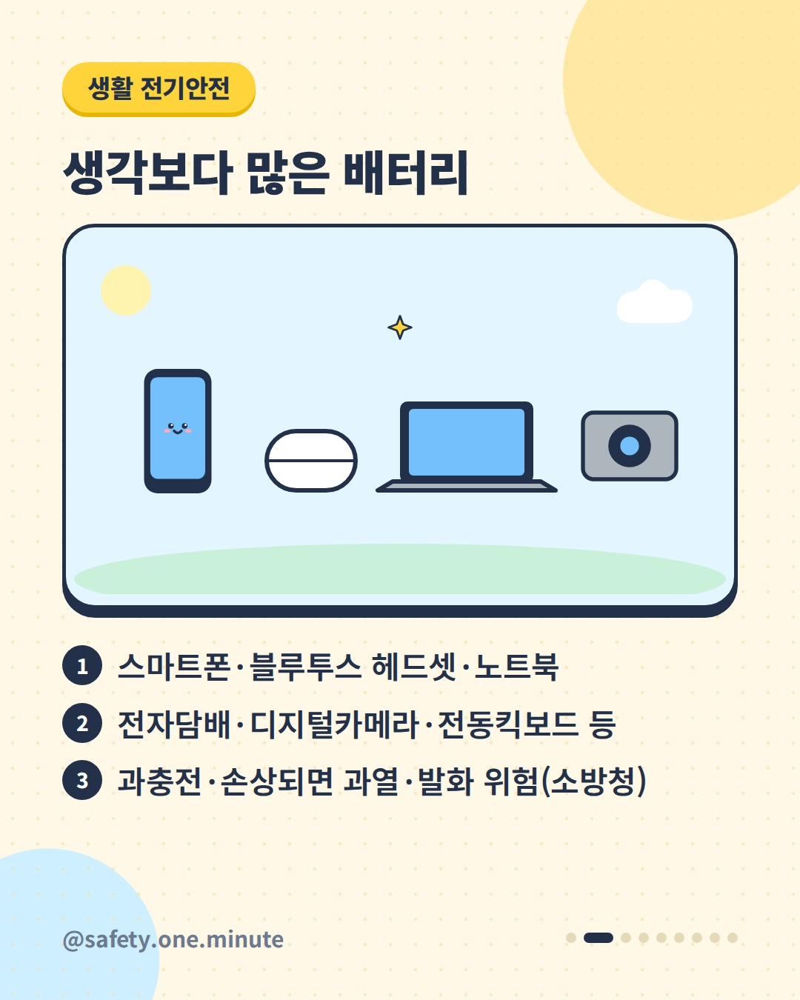
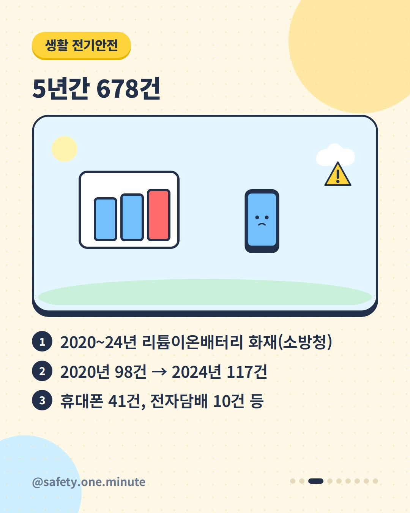
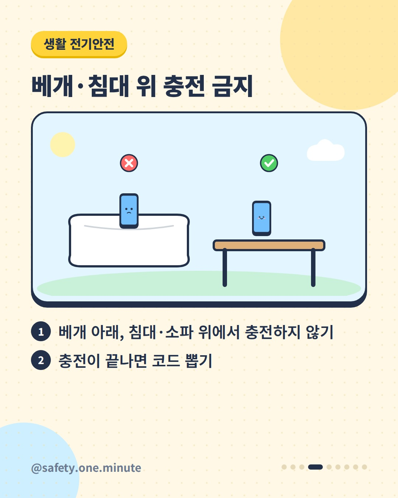
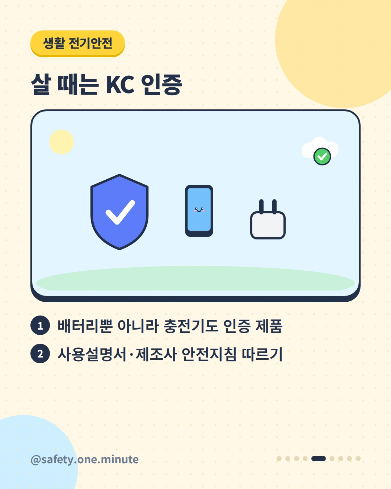
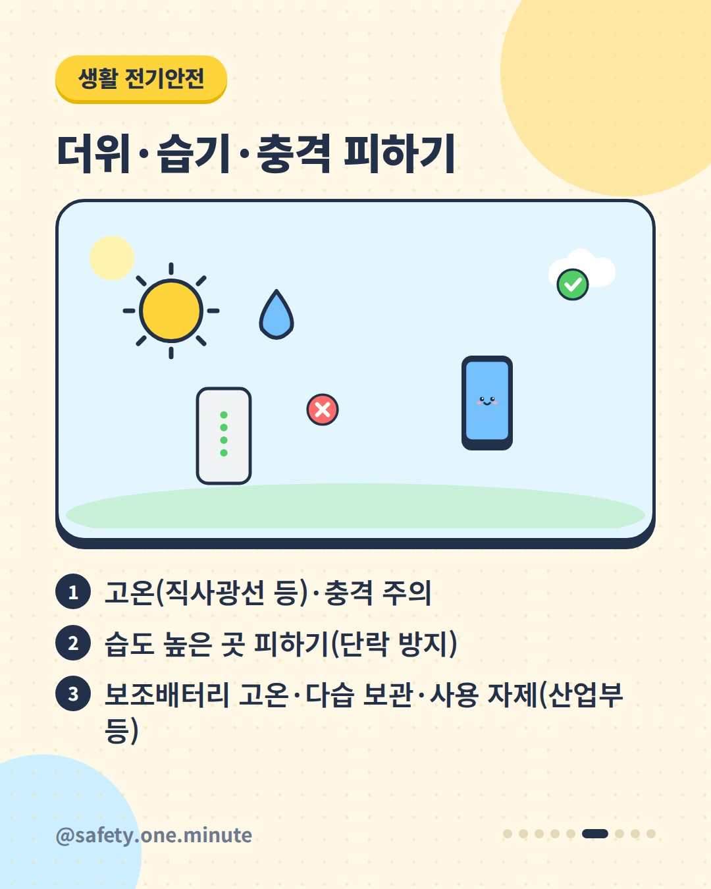
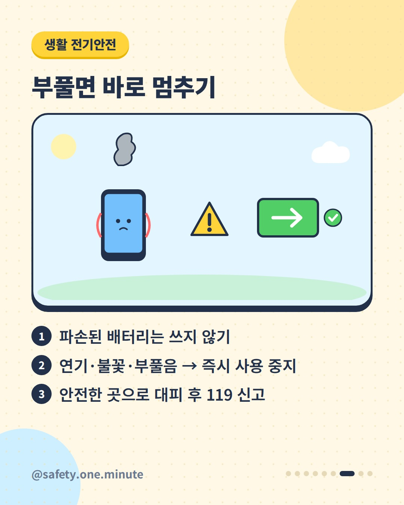
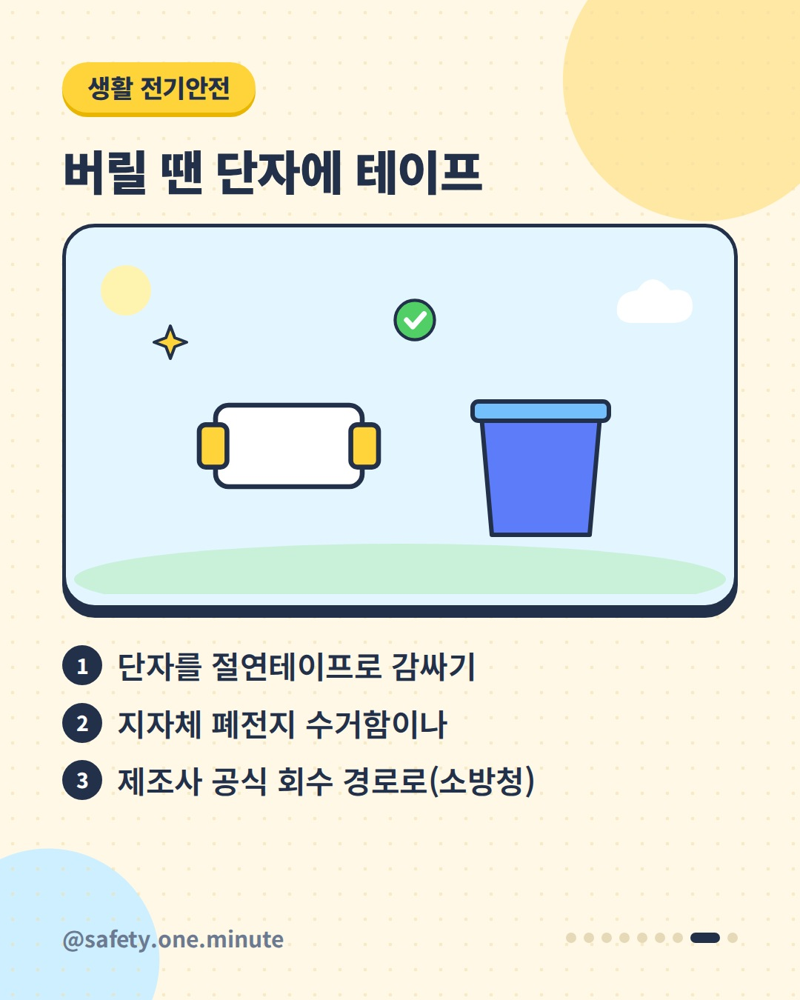
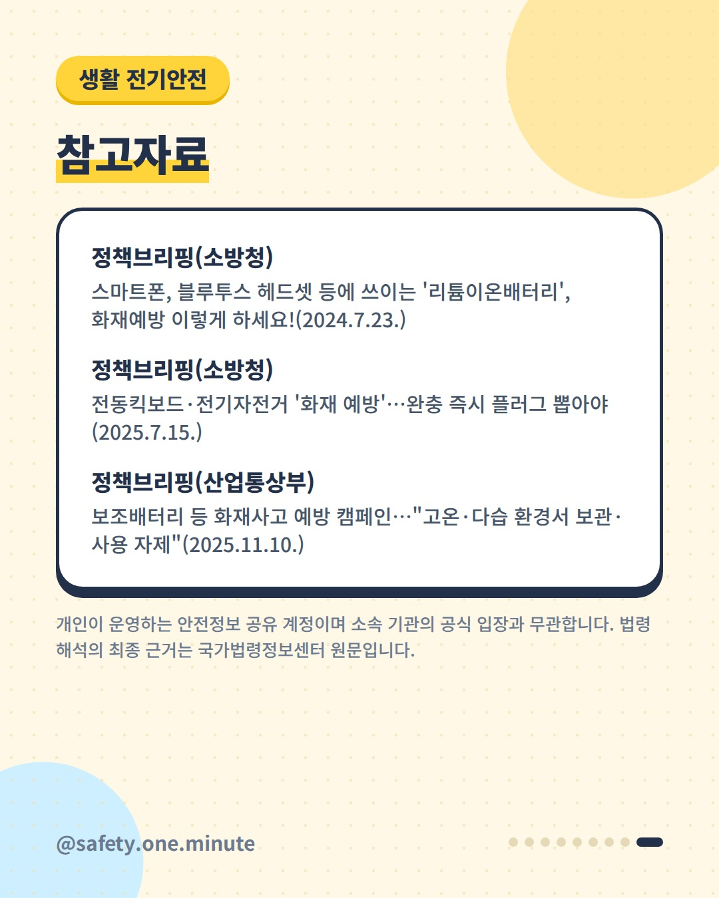

베개 밑 충전, 괜찮을까? — 9장 (4:5)









캡션
잠들기 전 휴대폰, 베개 밑에서 충전하시나요? 소방청에 따르면 2020~2024년 리튬이온배터리 화재는 678건으로 2020년 98건에서 2024년 117건으로 늘었고, 이 중 휴대폰이 41건이었습니다. 스마트폰·블루투스 헤드셋·노트북·전자담배처럼 생활 곳곳에 리튬이온배터리가 들어 있습니다. 소방청 등이 안내하는 생활 속 배터리 수칙입니다. ① 베개 아래, 침대·소파 위에서 충전하지 않고, 다 되면 코드 뽑기 ② 배터리와 충전기 모두 KC 인증 제품, 사용설명서·제조사 안전지침 따르기 ③ 직사광선 등 고온·충격 주의, 습도 높은 곳 피하기 — 보조배터리도 고온·다습한 곳에 두거나 쓰지 않기 ④ 파손된 배터리는 쓰지 말고, 연기·불꽃·부풀음이 보이면 즉시 사용을 멈추고 대피한 뒤 119 ⑤ 버릴 땐 단자를 절연테이프로 감싸 폐전지 수거함이나 제조사 회수 경로로 출처: - 소방청 – 리튬이온배터리 화재예방(2024), 리튬이온배터리 화재 현황(2025) - 산업통상부 – 보조배터리 등 화재사고 예방 캠페인(2025) 개인이 운영하는 안전정보 공유 계정이며 소속 기관의 공식 입장과 무관합니다. 법령 해석의 최종 근거는 국가법령정보센터 원문입니다. #보조배터리 #리튬이온배터리 #배터리화재 #충전안전 #생활안전 #화재예방